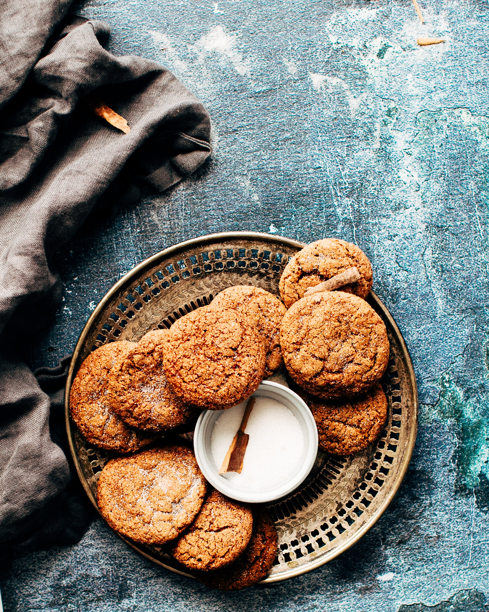

Sugar Cookies

Ingredients:
- 3/4 cup (1 1/2 sticks) butter, softened
- 1/2 cup brown sugar
- 1/2 cup granulated sugar
- 1 large egg
- 1 tablespoon vanilla extract
- 2 cups all-purpose flour
- 2 teaspoon cornstarch
- 1 teaspoon baking soda
- 1/4 teaspoon salt
- Any other ingredients for different flavorings
Recipe:
- Preheat oven to 350° and line two cookie sheets with parchment.
- Cream butter and sugars until light and fluffy, 3 to 4 minutes. Mix in egg and vanilla.
- Whisk together flour, cornstarch, baking soda, and salt.
- Then add mixture to wet ingredients and mix until smooth.
- Place tablespoon balls of dough onto parchment-lined cookie sheets. Press down lightly on each cookie to flatten slightly.
- Bake until edges are just starting to brown, 9 to 10 minutes.